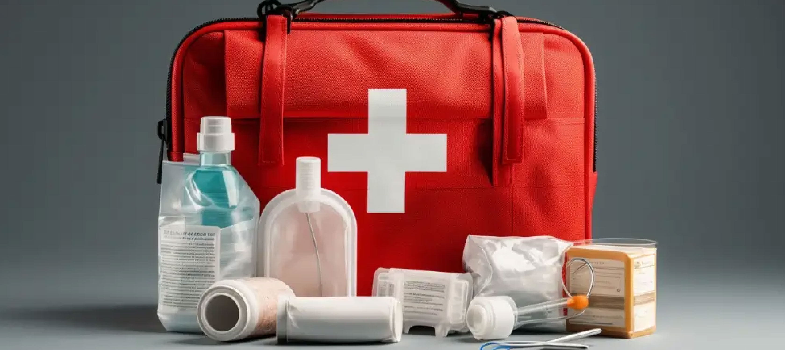

Contents of a basic first aid kit
- Sterile bandages and gauze
- Adhesive plasters
- Antiseptic solution or wipes
- Scissors and tweezers
- Disposable gloves
- Cotton and medical tape
- Thermometer
- Burn dressing
- Emergency contact list

Item and use
| Item | Use |
|---|---|
| Gauze | Cover and press on wounds |
| Antiseptic | Clean cuts to prevent infection |
| Gloves | Protect you from infection |
| Crepe bandage | Support sprains |
| Thermometer | Check body temperature |
Home safety tips
- Keep medicines and cleaning liquids away from children.
- Keep a first aid kit in an easy-to-reach place.
- Keep floors dry to prevent slips.
- Do not overload electric sockets.
Fire safety
- If your clothes catch fire: Stop, Drop and Roll.
- Leave the building immediately, and do not use the lift.
- Never go back inside for belongings.